I am a PhD candidate in Geophysics at the Caltech Seismological Laboratory. My research uses dense seismic observations, distributed acoustic sensing (DAS), active-source experiments, numerical modeling, and geodetic measurements to study how the solid Earth and cryosphere deform across scales. I am especially interested in seismic imaging and wave propagation in complex environments, glacier and ice-sheet dynamics, earthquake and fault physics, and extracting physical constraints from large geophysical datasets.
Across these problems, I combine field experiments with signal processing, array methods, imaging, and physics-based modeling to connect observations to the processes that produce them.
RESEARCH
Graduate Research
Current projects at Caltech spanning Antarctic seismology, dense sensing, seismic imaging, and earthquake physics.
Union Glacier: 3-D Seismic Imaging and Glacier Dynamics
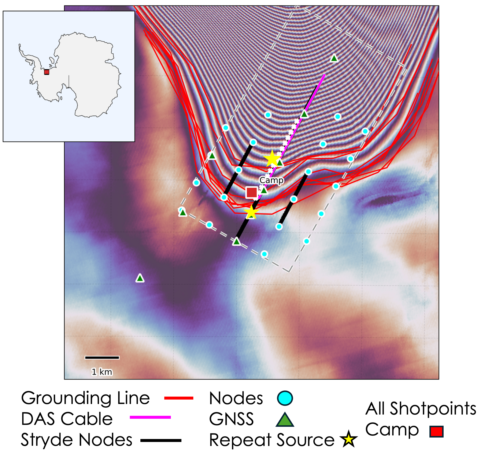
South Pole DAS Thermometry and Reflection Seismology
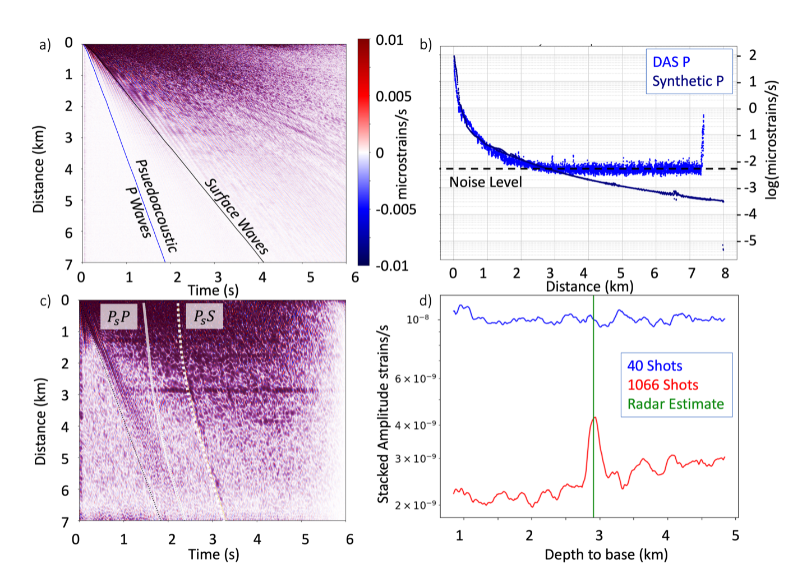
South Pole Sedimentary Basin Thickness from Receiver Functions
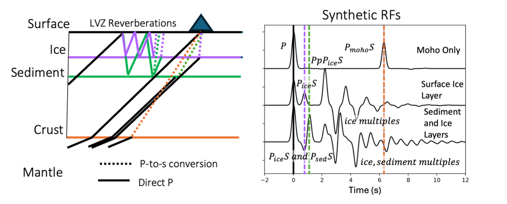
Rapid-Response DAS for Post-Fire Debris Flows
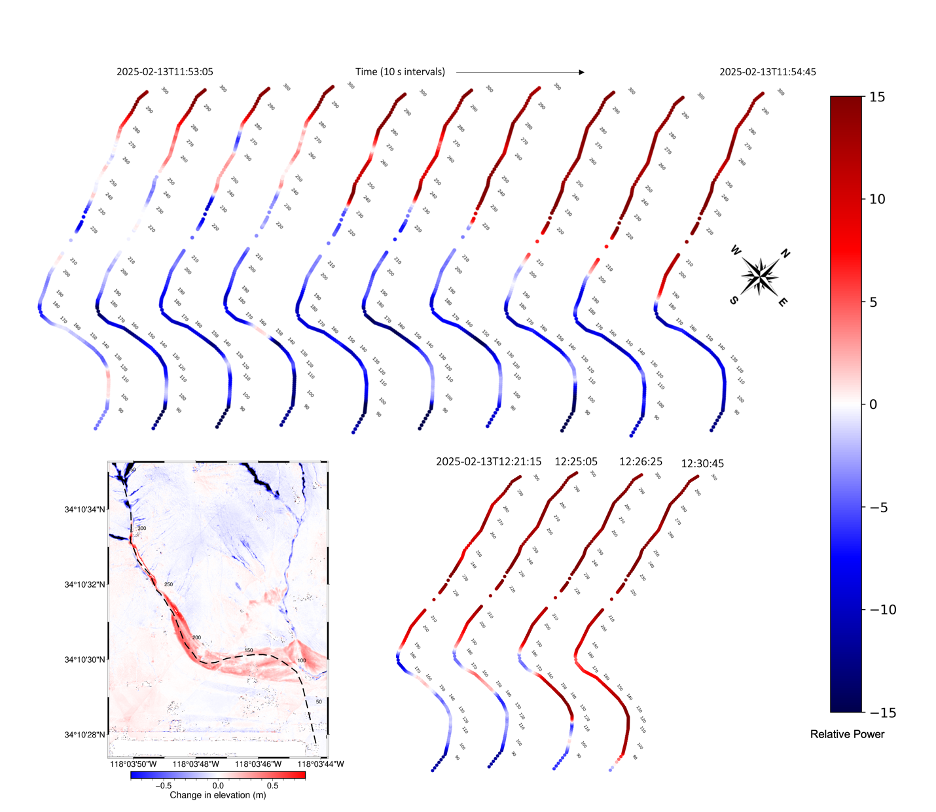
Slow-Slip Scaling and Rate-and-State Fault Physics
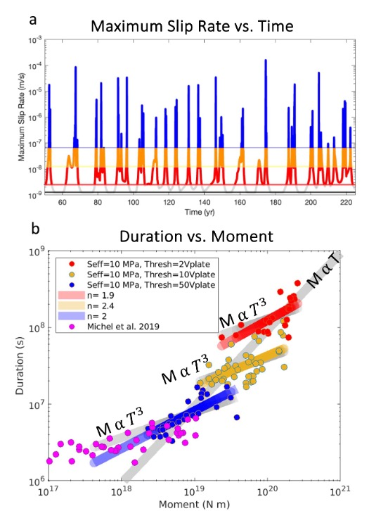
Undergraduate Research
Earlier research projects in volcanology and solid-Earth seismology.
Volatiles and Volcanism: Analyzing Iki Melt Inclusions for Carbon Dioxide, Water, and Carbonate Content
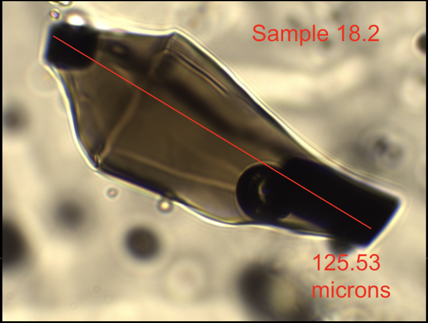
Identifying Triplicated P-phase Arrivals in Amphibious Seismic Data to Explore the Mantle Transition Zone
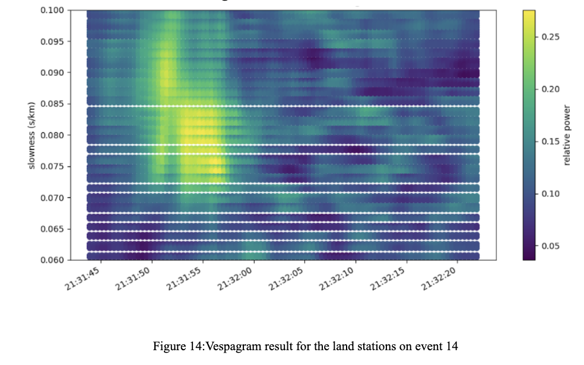
Relocating the 2021 and 1938 Chignik Alaska Aftershock Sequences with AACSE Array to Improve Rupture Area Estimates
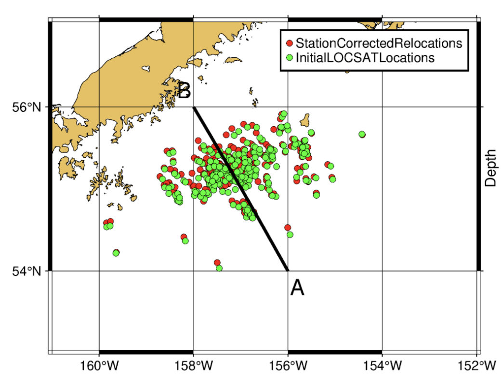
Analyzing Iki Melt Inclusions
A main controlling factor on the explosivity of an eruption is the dissolved volatile content, such as carbon dioxide and water. Once the melt becomes supersaturated in volatiles, the gases exsolve from the magma by nucleating bubbles. The exsolution of low density gases drives volcanic eruptions, as the bubbles coalesce and degass, driving the magma upwards due to the pressure created in the conduit. Further, water in particular controls physical and chemical characteristics of the magma such as crystallization and polymerization, and therefore affects physical properties of the magma such as density and viscosity, which in turn influence eruptive behavior. Therefore, measuring the volatile content of the source magma allows researchers to better understand the behavior of the eruption in terms of its explosivity. Secondly, measuring the volatile content in the initial magma source allows us to constrain the depth of the source, and therefore construct a fuller picture of the plumbing system for the given volcano.
But how do we measure the initial volatile content if the erupted material has been degassed, as happens during the ascension of the magma? Melt inclusions are pockets of initial melt that have been trapped inside crystals that formed at depth that act like pressure vessels. Melt inclusions contain the dissolved volatiles in the magma at the pressure, and therefore depth at which they were trapped, and ideally, the crystal protects the melt from further modification. Therefore, measurement of the total volatile content in the melt inclusion allows us to make such calculations. I emphasize total volatile content here, as we have to measure not only the content in the melt, but in the vapor bubble as well. The vapor bubble forms with cooling and decompression, where the melt contracts and the void space is filled by volatiles that are no longer soluble in the melt.
I spent my semester looking for and analyzing melt inclusions in olivine from the Kilauea Iki Eruption in 1959. In addition to the detection of pure CO2 and water, a main driver behind this project was to identify inclusions with carbonate content in and around the vapor bubble as well as carbon dioxide in the bubble. Research up until now involving Iki samples has only looked at the vapor phases of CO2 in melt inclusions (both in glass and vapor bubble), when in actuality, vapor bubbles host a variety of solid phases as well, including carbonates. Studies have shown that up to 80 percent of CO2 that is ‘lost’ from the glass during vapor bubble formation can be hosted in the solid carbonate phases that form in the vapor bubbles as CO2 concentrates (Venugopal et al. 2020), but this possibly significant carbon reservoir has not been included in melt inclusion analysis. This could potentially lead to underreporting of actual CO2 initially present in magma.
I was hoping to identify melt inclusions with both carbonate and CO2 that would be suitable to run a homogenization experiment, where the carbonate is heated and converted into carbon dioxide to be re analyzed for CO2 content, to get a more accurate concentration. My project was focused on the first stage of constraining initial volatile content, where I mainly worked on picking melt inclusions, polishing and mounting them, running Raman analysis, then doing post analysis to find the CO2 content in the vapor bubbles.
Click the links below to read the full report and presentation!
Identifying Triplicated P-phase Arrivals
The Mantle Transition Zone (MTZ) is the physical and chemical transitional layer that separates the Lower and Upper Mantle between depths of 410 and 660 kilometers. Seismograms recorded between 10 and 30 degrees epicentral from seismic events show clear evidence of rays traveling through these upper mantle discontinuities, known as triplication. Identifying triplicated P-phases in seismic arrival data allows seismologists to constrain features of the MTZ through waveform modeling, as differences in expected and observed travel times yield information about the exact ray paths taken such as depth of discontinuity and vertical heterogeneity. The Alaska Peninsula is an optimal region of study, due to the subduction of the Pacific Plate under the North American Plate, giving rise to significant seismic activity. The deployment of both onshore and ocean bottom seismometers during the Alaska Amphibious Community Seismic Experiment (AACSE) has gathered fifteen months of seismic data from which this project draws. After identifying suitable events for the study, the project discerns and enhances these triplication patterns from the amphibious data using array processing techniques such as filtering, stacking, beamforming, frequency wavenumber analysis, and cross correlation. The paper goes on to discuss the specific challenges with ocean bottom seismometer data, as well as effects from volcanic structures on arrival data while using the listed techniques to rectify these obstacles. This identification would be important to the field of earth science, as it would advance the understanding of Earth’s internal processes by better understanding key features of its structure. Currently, there is much speculation as to the origin of volcanic activity and magmas which seem unrelated to known processes of volcanism. Many theories involve the MTZ, characterizing a new class of volcanism that originates in this zone which would be greatly aided by an accurate model of the region.
Click the links below to read the full report and presentation!
Relocating the 2021 and 1938 Chignik Alaska Aftershock Sequences
The 2021 M8.2 Chignik Alaska earthquake and its aftershock sequence raise questions about whether it is a repeat of the 1938 M8.3 event in the Semidi segment, the extent to which their rupture areas overlap, how either relate to seismically-imaged structures, and whether additional megathrust earthquakes in the region are possible. Accurate aftershock locations for these great earthquakes are key, as the 1938 rupture area is estimated from its recorded aftershocks. Like most subduction zone earthquakes, these sequences occurred offshore away from seismometers, so their geometry is uncertain. Fortunately, in 2018-19 an on and offshore experiment (AACSE) was conducted in this region, providing good control on seismicity location prior to 2021. We improve the rupture area estimates for the Chignik and 1938 sequences using well-located earthquakes from AACSE to calibrate travel times to stations recording during the 2021 and 1938 sequences and subsequently relocating them. Our approach is fourfold: (1) Gather regional station corrections using the AACSE seismometers in the Chignik rupture region. Though the array did not record the 2021 event, the AACSE catalog is used to collect corrections for regional stations that recorded the sequence. (2) Apply these corrections to the velocity model to relocate the Chignik sequence. Initial hypocenter relocations show little lateral change, with more significant depth variation. Initial relocated hypocenters remain 25-45 km deep, consistent with the working theory that the 2021 rupture did not reach the surface. (3) Retrieve teleseismic station corrections for the larger 2021 aftershocks prior to relocation of the 1938 rupture, which only has data from stations >30 degrees epicentrally. (4) Relocate the 1938 sequence using teleseismic corrections. There are too few recorded events in the 1938 sequence to unambiguously map the aftershock zone, but initial analysis suggests relocations to be similar to their original locations.
This project was presented as a poster at SSA (Seismological Society of America) Conference in April. A manuscript is currently in the works. Check out the poster below!
Union Glacier: 3-D Seismic Imaging and Glacier Dynamics
Drag to rotate, scroll to zoom, and hover over the 3-D scene for details.
At Union Glacier, Antarctica, I lead seismic components of a dense geophysical experiment designed to image the ice column, basal environment, and structures controlling ice-stream motion. The experiment combines kilometers of distributed acoustic sensing with dense nodal seismometers, GNSS, radar, and active sources.
My work focuses on high-resolution seismic imaging and wave propagation in strongly three-dimensional glacier geometry, including reflected and converted phases, out-of-plane structure, migration, and integration with radar and geodetic constraints. I also use numerical wave-propagation models to test how basal materials, water layers, and reflector geometry appear in the observations.
DAS Thermometry and Reflection Seismology at the South Pole
At the South Pole, we converted existing fiber-optic infrastructure into a dense distributed acoustic sensing array for active-source and passive seismology. I use reflection amplitudes, converted phases, attenuation, and waveform modeling to investigate the thermal state of the ice sheet and the properties of the subglacial sedimentary basin.
This work links seismic observations to basal temperature, sediment properties, and ice-sheet dynamics, demonstrating how DAS can provide high-resolution constraints in an environment where conventional geophysical measurements are difficult to acquire.
Constraints on South Pole Sedimentary Basin Thickness
I developed a modified receiver-function approach for the South Pole that avoids unstable deconvolution in glacial settings by forward modeling the radial component from the observed vertical component. The method uses broadband seismic observations to constrain the subglacial sedimentary basin beneath the ice sheet.
The results indicate an approximately 500–1500 m thick sedimentary basin across the array, with thickness increasing toward the South Pole. This helps reconcile previous geophysical estimates and provides constraints on the basal environment relevant to ice-sheet dynamics.
Following the Eaton Fire, we rapidly deployed distributed acoustic sensing to observe post-fire landscape response with dense, continuous seismic measurements. The project tests how fiber-optic infrastructure can be used as a rapid-response geophysical sensor after a major environmental disturbance.
I work on processing and interpreting the DAS dataset to identify and characterize signals associated with changing near-surface and hillslope processes, with the broader goal of developing dense seismic sensing for rapid natural-hazard response.
Scaling of Episodic SSEs on Simulated Rate-and-State Faults
I use Cascadia-like rate-and-state fault simulations to study the moment-duration scaling of episodic slow-slip events and how inferred scaling depends on both physical parameters and the way simulated event catalogs are constructed.
The work tests the effects of slip-rate thresholds, integration area, and effective normal stress. The simulations show that processing choices can substantially change inferred event size and scaling, while lower effective normal stress can also produce systematically different scaling. This provides a path toward using slow-slip observations to constrain fault-zone physics while accounting for observational and processing limitations.
FIELDWORK
Field campaigns, polar logistics, and geophysical deployments.
AntarcticaUnion Glacier basecamp, winter 2025
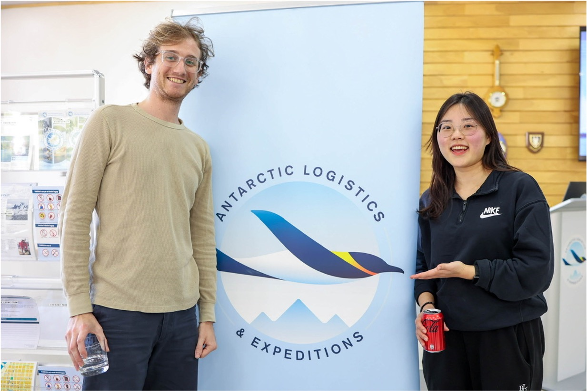
AntarcticaAntarctic Logistics & Expeditions preparation in Punta Arenas
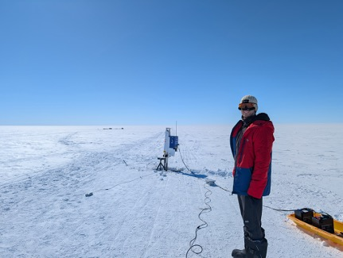
AntarcticaActive-source seismic shots at Constellation Inlet
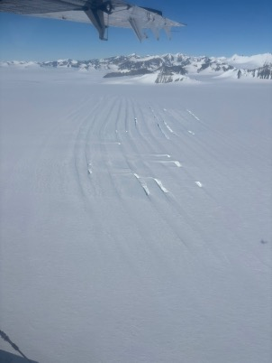
AntarcticaCrevasse field showing Mode I cracks perpendicular to ice flow
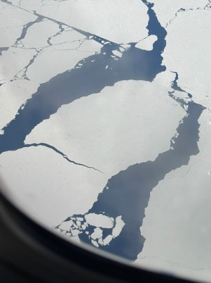
AntarcticaFlying over ice shelves on the continental margins, with a propagating Mode I crack clearly visible
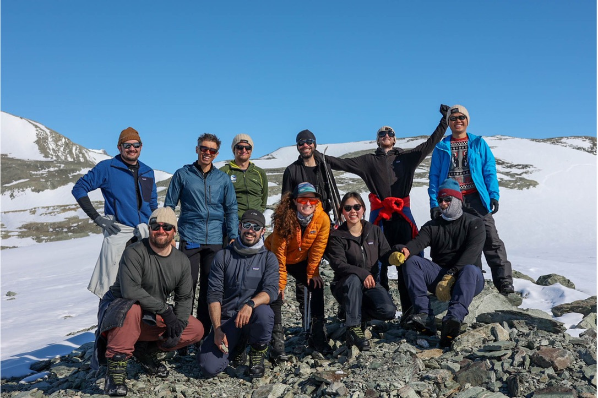
AntarcticaTeam photo at "the Beach," Union Glacier, Antarctica
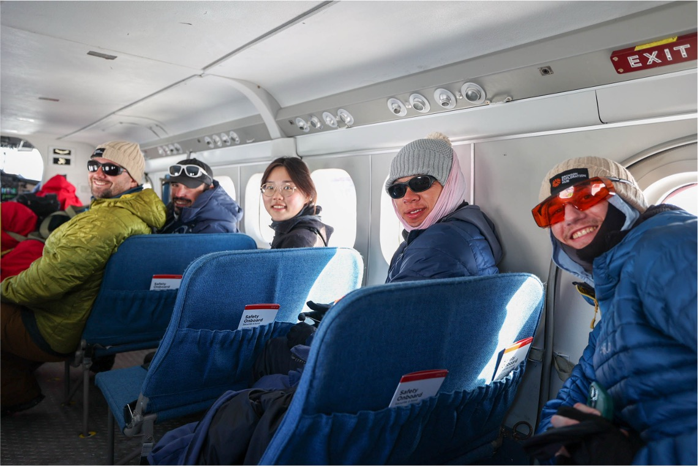
AntarcticaTeam on the short ice-plane flight from Union Glacier to Constellation Inlet
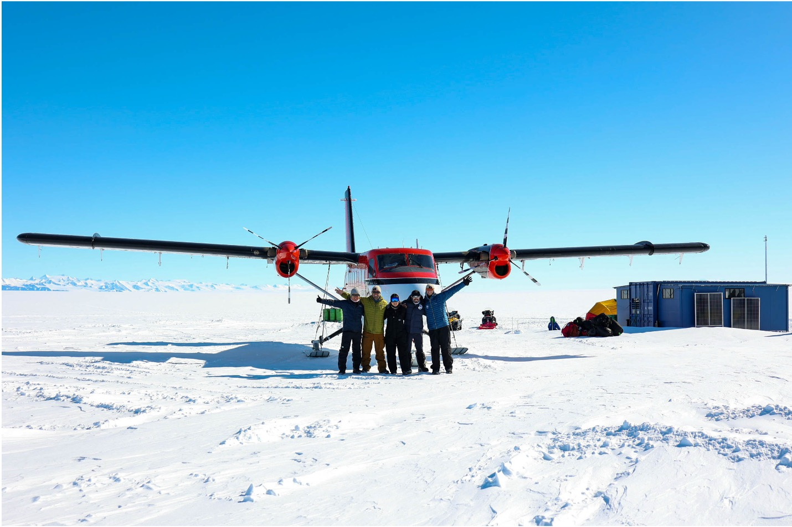
AntarcticaIce plane on skis
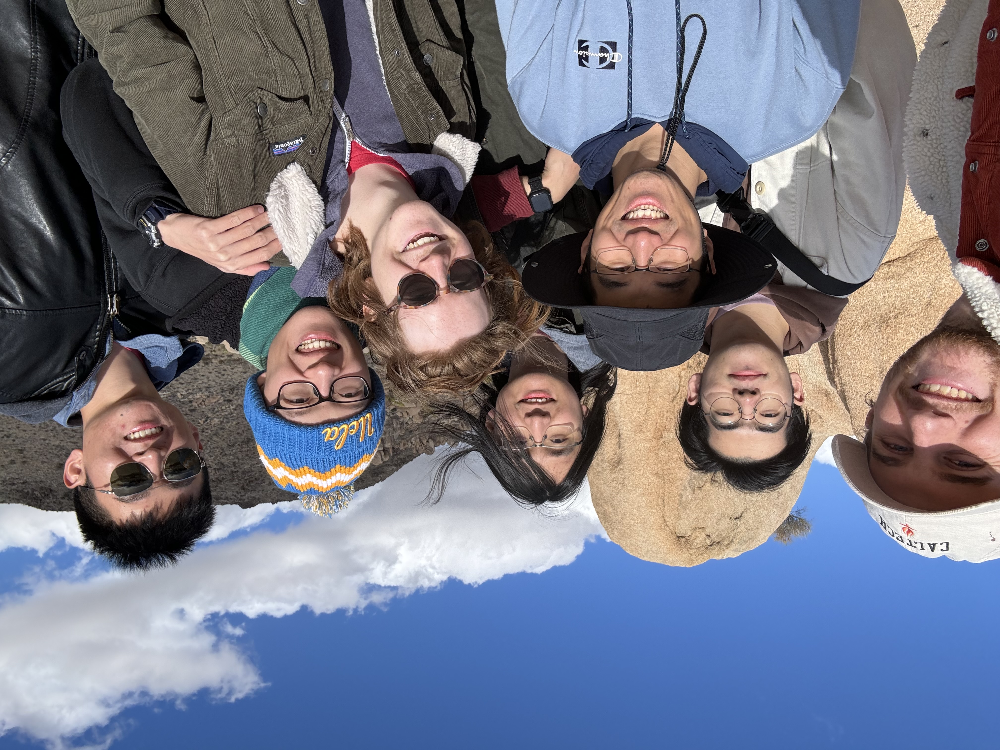
CaliforniaOffice field trip to Joshua Tree
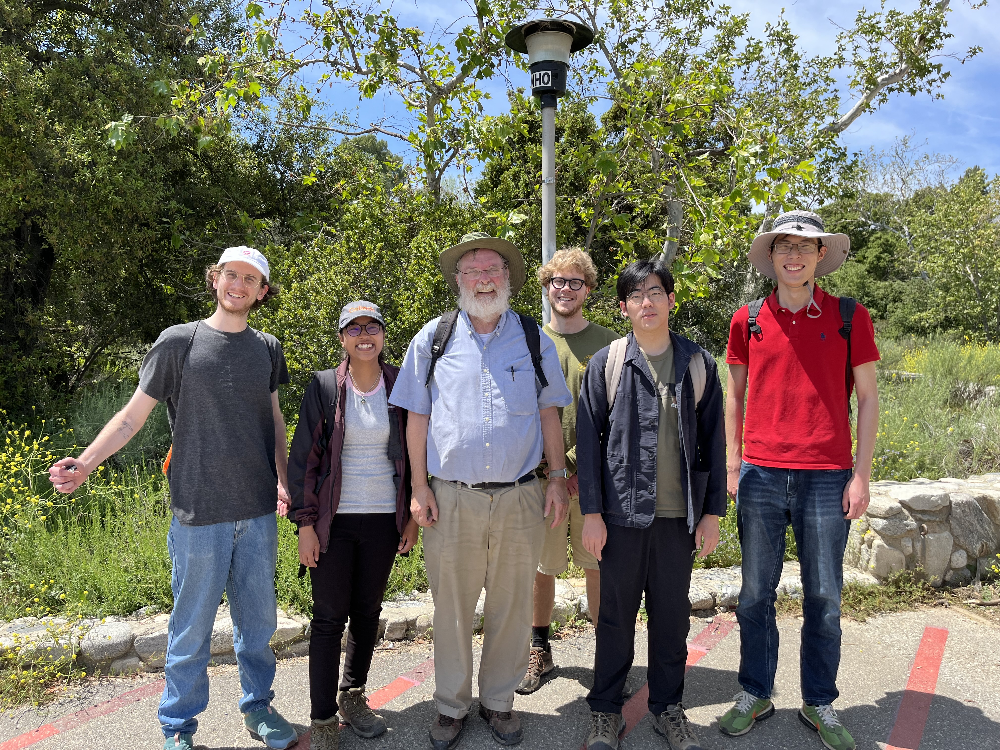
CaliforniaField test for a geophysics course outside JPL
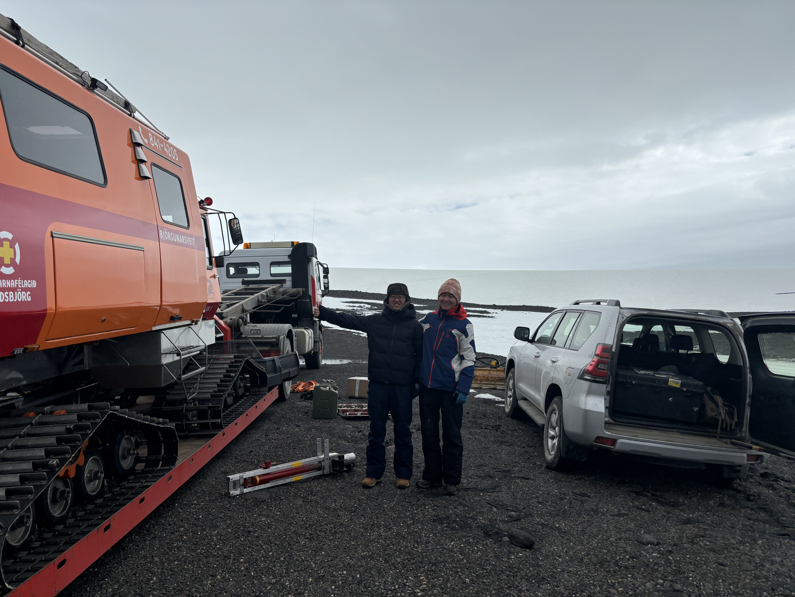
IcelandShane and Jiaxuan with the Snocat at Langjökull Glacier base, Iceland
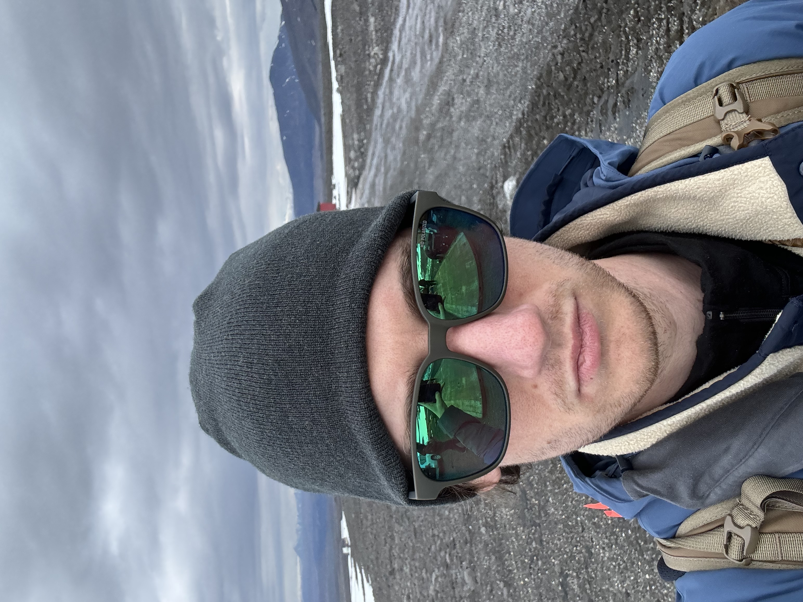
IcelandStanding at the base of Langjökull Glacier
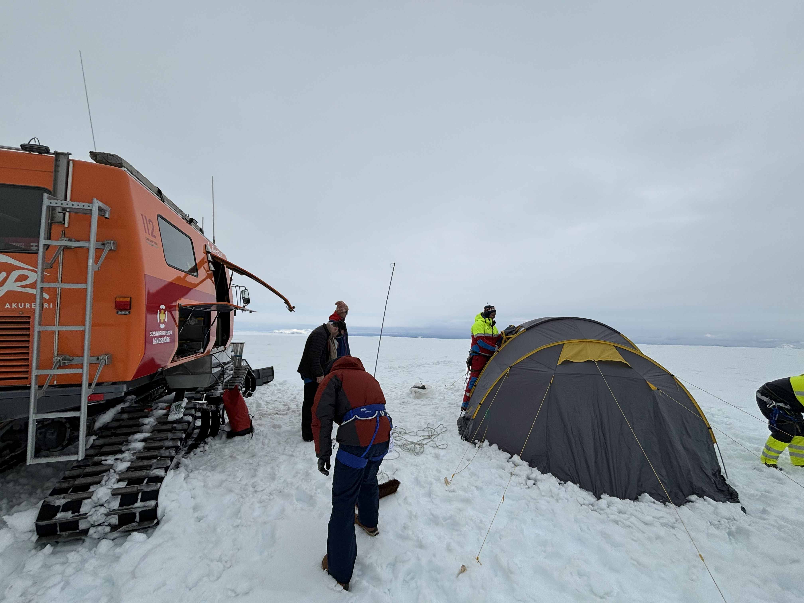
IcelandSetting up camp and the DAS system
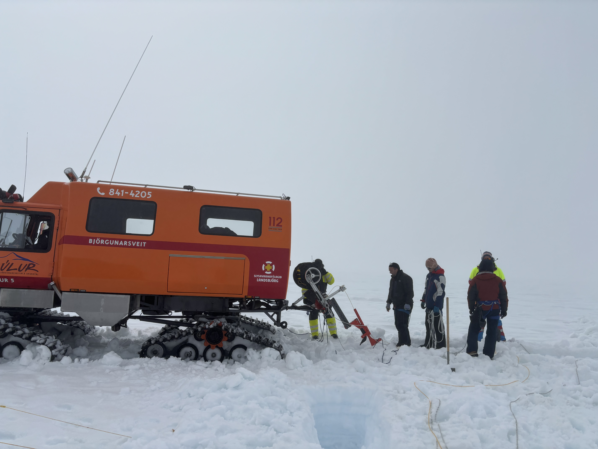
IcelandDeploying DAS fiber with the Snocat
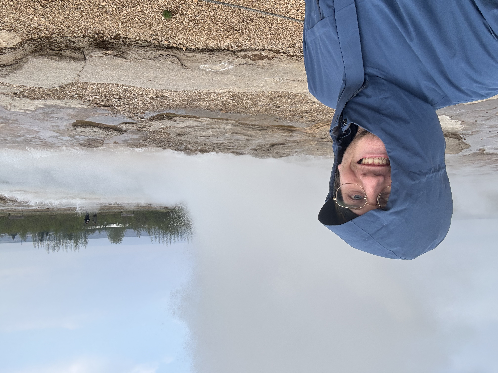
IcelandStrokkur geyser field
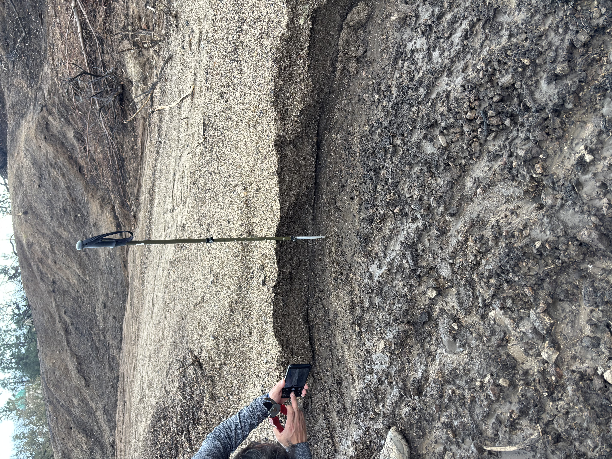
CaliforniaDebris-flow surface post-rain at Bailey Canyon
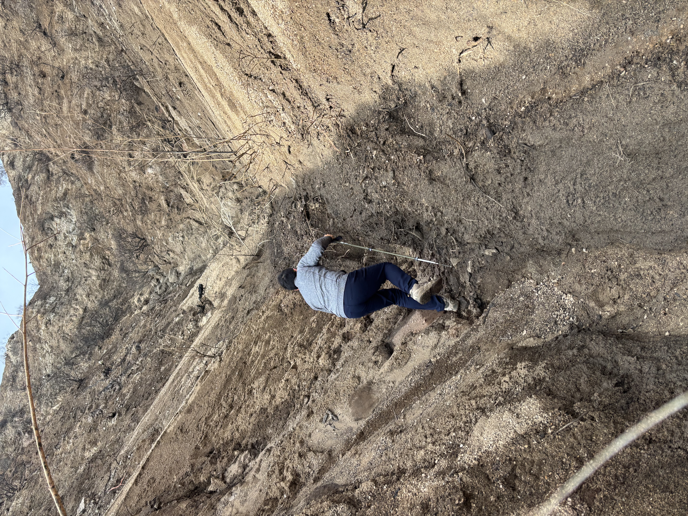
CaliforniaUpstream debris-flow signature post-flow, showing large changes in topography along the canyon
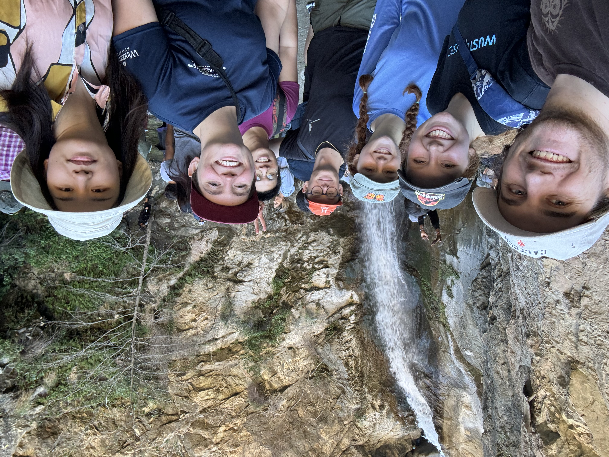
CaliforniaHike to Eaton Canyon and Falls
IcelandVideo showing cable deployment with a homemade system and Snocat
Choose a location above, or use the arrows, thumbnails, keyboard arrow keys, or swipe to move through the field gallery.
Click outside the image or press Esc to close
TEACHING
Teaching experience in geophysics, Earth science, mathematics, and physics.
Graduate Teaching — Caltech
Teaching Assistant, California Institute of Technology
Field Geophysics
Spring 2024
Plate Tectonics
Fall 2024
Fracture & Frictional Faulting
Spring 2025
Rock Mechanics
Winter 2026
Undergraduate Teaching — Cornell
Peer tutoring and Engineering Learning Initiatives teaching materials.
Differential Equations
Worksheets, presentations, and additional course materials